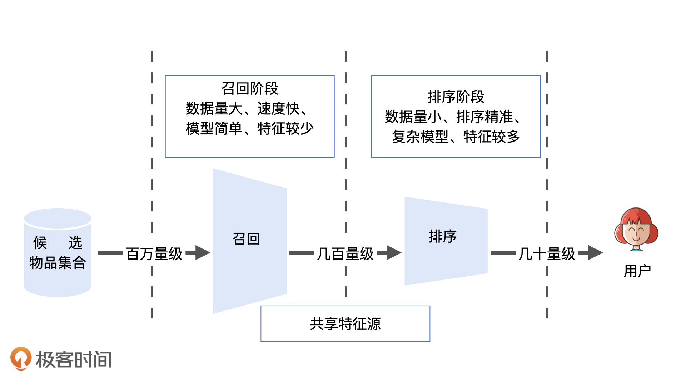
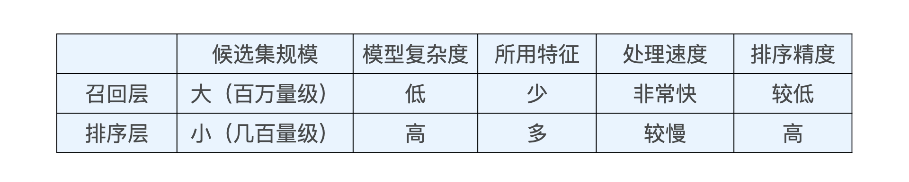
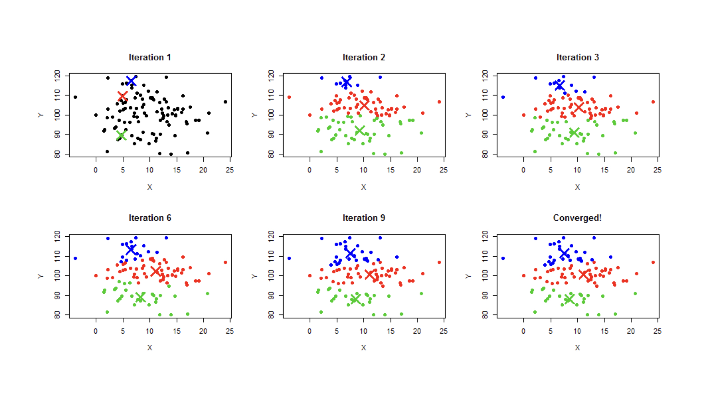
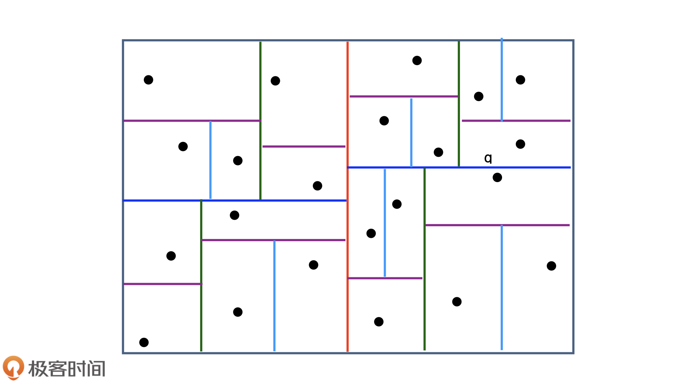
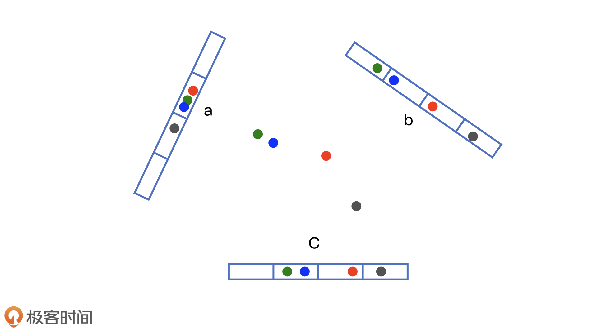

召回¶
召回层简介¶
如果你是一名快手的推荐工程师，你的任务是从500万候选视频中，为一名用户推荐10个他最感兴趣的，怎么做呢？
最直接暴力的方法是，对这500万个短视频挨个打分、排序，取出得分最高的10个给用户。但是对于复杂模型，给500万个视频打分十分消耗计算资源，集群没法承受。
在推荐物品候选集非常大的时候，我们首先需要快速准确地筛掉大部分不相关物品，节约排序时的计算资源，这就是召回层要解决的问题。

召回层和排序层的特点

Embedding召回¶
我们可以利用物品和用户Embedding的相似性来构建召回层。（就像矩阵分解）
Embedding召回的优势：
1.多路召回中的“兴趣标签”“热门度”“物品属性”等都可以作为Embedding方法中的附加信息，因此利用Embedding召回，就相当于考虑到了利用多种策略召回。
2.Embedding召回标准唯一，多路召回中“兴趣标签”“热门度”不具有可比性，而Embedding召回使用向量相似度作为唯一标准。
3.线上服务中，Embedding相似性的计算简单又直接。
局部敏感哈希¶
推荐系统中的“快速”Embedding最近邻搜索问题
第一种方法是使用聚类，如k-means

问题有：
k选太大，离线训练会很慢
k选太小，没减少多少搜索时间
会遗漏边界情况
第二种方法是使用索引，如建立一棵kd-tree（这里是平衡二叉树）

但是也会有边界问题，且生成和维护kd-tree的过程也相对复杂
第三种方法是使用局部敏感哈希，它可以在常数时间内搜索Embedding的最近邻
局部敏感哈希的基本思想是希望让相邻的点落入同一个“桶”，那么在最近邻搜索的时候只需在一个桶内或相邻的几个桶内搜索即可。那么如何构建“桶”呢？
我们注意到，欧氏空间中，将高维空间的点映射到低维空间，原本接近的点在低维空间中肯定依然接近，但原本远离的点则有一定概率变成接近的点。

对于embedding向量来说，由于我们大量使用内积操作来计算相似性，因此也可以使用内积操作来构建局部敏感哈希桶。
假设 \(v\) 是 \(k\) 维的embedding向量，\(x\) 是随机生成的 \(k\) 维向量，那么我们可以利用内积操作将 \(v\) 映射到一维空间：
我们利用哈希函数 \(h_{x}(v)\) 来进行分桶，假设 \(w\) 是分桶宽度，那么：
其中 \(b\) 是 \(0\) 到 \(w\) 间均匀分布的随机变量，\(\left [ \right ]\)是取整操作。
多桶策略：
如果我们仅采用一个哈希函数进行分桶，必然存在相似点误判的情况，因此我们可以采用 \(m\) 个哈希函数同时进行分桶。
策略可以灵活选择，比如说使用3个分桶函数，把同时落入两个桶的点作为最近邻候选点。